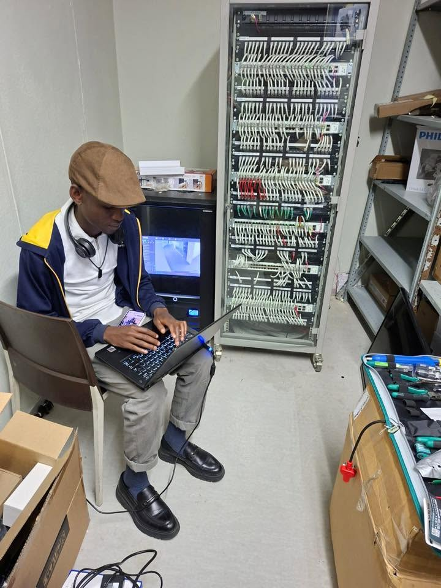

Email Writer
Draft clear, professional workplace emails.
IT SUPPORT · COMMUNICATION NETWORKS
Diploma in Information Technology (Communication Networks) graduate from Nelson Mandela University, with experience supporting users, troubleshooting technical issues and assisting with network devices.

PORTFOLIO
My professional summary and career background.
Read more →Technical and professional skills.
View skills →A place to showcase practical work and projects.
View projects →Qualifications and completed certifications.
View education →Work experience and responsibilities.
View experience →Contact details for professional opportunities.
Get in touch →AI PRODUCTIVITY PROJECT
Your workplace productivity assistant. Draft emails, summarize meeting notes, organize tasks and plan research with the help of AI.
Draft clear, professional workplace emails.
Turn notes into summaries and action items.
Organize priorities and plan your workday.
Structure research questions and findings.
Get help with everyday workplace questions.
AI-generated content should be reviewed before use.